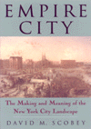

|
|
Afterimage
Film, Trauma, and the Holocaust
Hirsch, Joshua
How films on the Holocaust gave birth to a new cinematic genre
232 pp • 6x9 • Fall 2003
paper 1-59213-209-X
EAN 978-1-59213-209-6
cloth 1-59213-208-1
EAN 978-1-59213-208-9
|
|
|
Am
I Still a Woman?
Hysterectomy and Gender Identity
Elson, Jean
What makes a woman a woman?
264 pp • 5.5x8.25 • Fall 2003
paper 1-59213-211-1
EAN 978-1-59213-211-9
cloth 1-59213-210-3
EAN 978-1-59213-210-2
|
|
|
Broken
Promise
The Subversion of U.S. Labor Relations Policy, 1947-1994
Gross, James A.
This inside look at government regulations analyzes the failure
of the Wagner-Taft-Hartley Act
New in Paperback!
422 pp • 6x9 • Fall 2003
paper 1-59213-225-1
EAN 978-1-59213-225-6
|
|
|
Closing
the Book on Homework
Enhancing Public Education and Freeing Family Time
Buell, John
A ringing indictment of homework and what can replace it
176 pp • 5.5x8.25 • Fall 2003
paper 1-59213-218-9
EAN 978-1-59213-218-8
cloth 1-59213-217-0
EAN 978-1-59213-217-1
|
|
|
Defining
America Through Immigration Policy
Hing, Bill Ong
From the American Revolution to the war in Iraq, the struggle to
define who is—and can become—an American
336 pp • 7x10 • Fall 2003
paper 1-59213-233-2
EAN 978-1-59213-233-1
cloth 1-59213-232-4
EAN 978-1-59213-232-4
|
| 
|
Empire
City
The Making and Meaning of the New York City Landscape
Scobey, David M.
How did New York City come to represent the best and worst of urban
life?
New in Paperback!
352 pp • 7x10 • Spring 2002
paper 1-59213-235-9
EAN 978-1-59213-235-5
|
| 
|
Fireweed
A Political Autobiography
Lerner, Gerda
A beautifully written, dramatic memoir from one of women's history's
founders
New in Paperback!
408 pp • 7x10 • Spring 2002
paper 1-59213-236-7
EAN 978-1-59213-236-2
|
|
|
History
and September 11th
Meyerowitz, Joanne
Locating the historical roots of the September 11th attacks
288 pp • 6x9 • Fall 2003
paper 1-59213-203-0
EAN 978-1-59213-203-4
cloth 1-59213-202-2
EAN 978-1-59213-202-7
|
|
|
Home
Bound
Growing Up with a Disability in America
Irvin, Cass
Finding the way home without a map
232 pp • 6x9 • Fall 2003
paper 1-59213-220-0
EAN 978-1-59213-220-1
cloth 1-59213-219-7
EAN 978-1-59213-219-5
|
|
|
The
"Huddled Masses" Myth
Immigration and Civil Rights
Johnson, Kevin R.
The disconnect between national rhetoric, the law, and public policy
264 pp • 6x9 • Fall 2003
paper 1-59213-206-5
EAN 978-1-59213-206-5
cloth 1-59213-205-7
EAN 978-1-59213-205-8
|
|
|
Inheritance
Law and the Evolving Family
Brashier, Ralph C.
How inheritance law has failed to recognize the modern family
272 pp • 6x9 • Fall 2003
paper 1-59213-222-7
EAN 978-1-59213-222-5
cloth 1-59213-221-9
EAN 978-1-59213-221-8
|
|
|
Islam
in Urban America
Sunni Muslims in Chicago
Schmidt, Garbi
How does the practice of Islam and its community of believers change
in the American context?
256 pp • 6x9 • Fall 2003
paper 1-59213-224-3
EAN 978-1-59213-224-9
cloth 1-59213-223-5
EAN 978-1-59213-223-2
|
|
|
La
Merica
Images of Italian Greenhorn Experience
La Sorte, Michael
A powerful, moving picture painted by the narratives of first generation
Italian Americans
New in Paperback!
224 pp • Spring 1985
paper 1-59213-234-0
EAN 978-1-59213-234-8
|
|
|
Missing
Pieces
A Chronicle of Living with a Disability
Zola, Irving Kenneth, and Nancy Mairs
A reissue of the classic book that gave birth to disability
Reannouncing
258 pp • 5.8125x9 • Fall 2003
paper 0-87722-311-4
EAN 978-0-87722-311-5
|
|
|
My
Mother's Hip
Lessons from the World of Eldercare
Margolies, Luisa, and Dr. Walter M. Bortz
What most of us don't know about the longevity revolution
360 pp • 6x9 • Fall 2003
paper 1-59213-238-3
EAN 978-1-59213-238-6
cloth 1-59213-237-5
EAN 978-1-59213-237-9
|
|
|
Native
Sons
Philadelphia Baseball Players Who Made the Major Leagues
Westcott, Rich, and Bill Campbell
Profiles of local athletes who made the big leagues
184 pp • 5.5x8.25 • Fall 2003
paper 1-59213-215-4
EAN 978-1-59213-215-7
|
| 
|
No
Sword to Bury
Japanese Americans in Hawai'i during World War II
Odo, Franklin
Another band of brothers
336 pp • 6x9 • Fall 2003
cloth 1-59213-207-3
EAN 978-1-59213-207-2
|
| 
|
Specular
City
The Transformation of Culture, Consumption, and Space after Per�n
Podalsky, Laura
A rich history of Buenos Aires during the inter-Per�nist years,
and a history-in-miniature of the modernization of Latin America
Previously Announced
304 pp • 7x10 • Fall 2003
paper 1-56639-948-3
EAN 978-1-56639-948-7
cloth 1-56639-947-5
EAN 978-1-56639-947-0
|
|
|
The
Spirits of America
A Social History of Alcohol
Burns, Eric
From an acclaimed broadcast journalist, a history of America's
complex affair with drink
344 pp • 6.125x9 • Fall 2003
cloth 1-59213-214-6
EAN 978-1-59213-214-0
|
|
|
Storytelling
in Daily Life
Performing Narrative
Langellier, Kristin, and Eric Peterson
A guide to understanding storytelling in context
288 pp • 7x10 • Fall 2003
paper 1-59213-213-8
EAN 978-1-59213-213-3
cloth 1-59213-212-X
EAN 978-1-59213-212-6
|
|
|
Technological
Visions
The Hopes and Fears that Shape New Technologies
Sturken, Marita, Douglas Thomas, and Sandra J. Ball-Rokeach, eds.
Our hopes and dreams for new technologies
384 pp • 7x10 • Fall 2003
paper 1-59213-227-8
EAN 978-1-59213-227-0
cloth 1-59213-226-X
EAN 978-1-59213-226-3
|
|
|
Women,
Creole Identity, and Intellectual Life in Early Twentieth-Century
Puerto Rico
Roy-F�qui�re, Magali
A feminist inquiry into the rhetoric of Puerto Rican national identity
in the early twentieth century
328 pp • 7x10 • Fall 2003
paper 1-59213-231-6
EAN 978-1-59213-231-7
cloth 1-59213-230-8
EAN 978-1-59213-230-0
|
| 
|
Workforce
Development Politics
Civic Capacity and Performance
Giloth, Robert P., ed.
A look at local efforts to improve job training
296 pp • 6x9 • Fall 2003
paper 1-59213-229-4
EAN 978-1-59213-229-4
cloth 1-59213-228-6
EAN 978-1-59213-228-7
|
|
|
Workforce
Intermediaries for the Twenty-First Century
Giloth, Robert P., ed.
The institutions who work to match employers and employees
432 pp • 7x10 • Fall 2003
cloth 1-59213-204-9
EAN 978-1-59213-204-1
|
|
|
The
World the Sixties Made
Politics
and Culture in Recent America
Gosse, Van, and Richard Moser, eds.
A bold reinterpretation of the Sixties� legacy
352 pp • 6x9 • Fall 2003
paper 1-59213-201-4
EAN 978-1-59213-201-0
cloth 1-59213-200-6
EAN 978-1-59213-200-3
|
Click here
to download the catalog (pdf). |